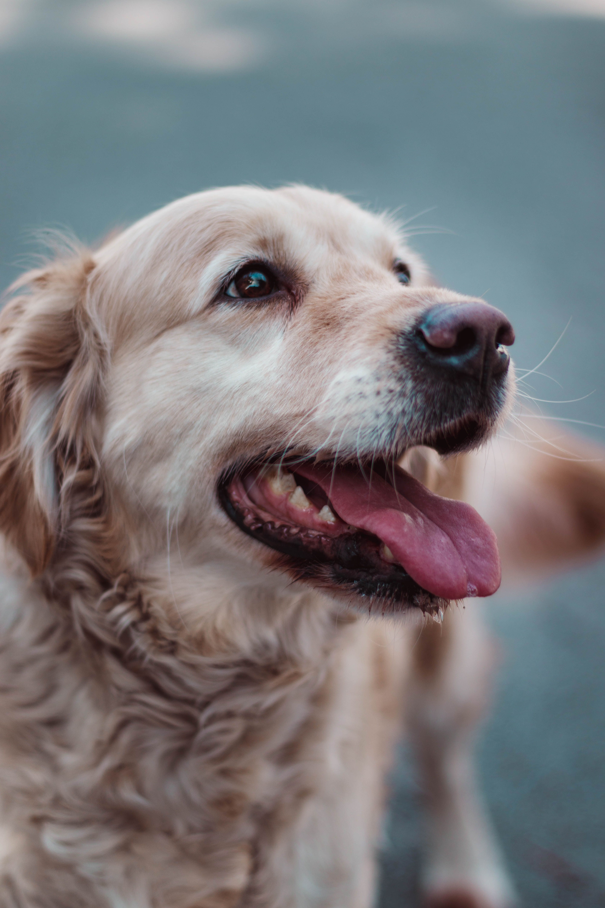
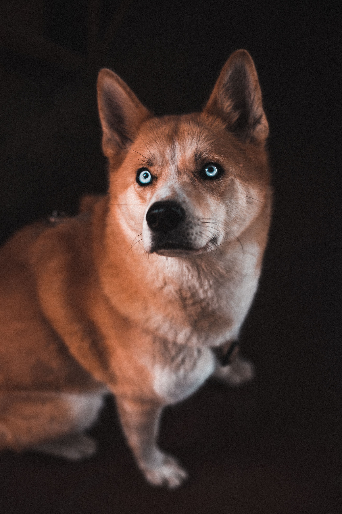
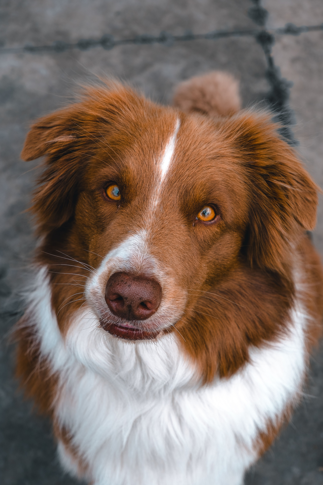

dog

This is a photo of a golden retriever I found on Pexels. It looks so happy and adorable!
dog

This is a picture of a Shiba Inu I found on Pexels. Shiba Inus are native to Japan and were historically used as hunting dogs to hunt small prey. They're so cute!
dog

This is a photo of a Labrador Retriever I found on Pexels. Labradors are known for their friendly and devoted nature, making them excellent family pets.